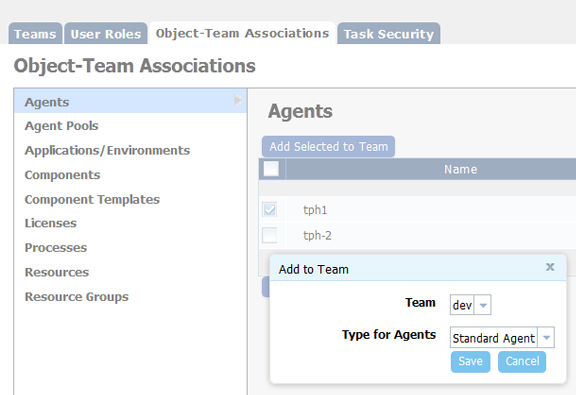
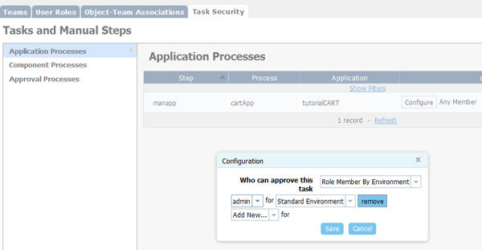

To migrate security settings from uDeploy® 4.8.5 or IBM® uDeploy 5.0
to IBM DevOps Deploy (Deploy),
complete these steps.
Before you begin
Read the Managing Security topic, which helps you determine the number of teams you need.Note: If you are upgrading from a
version before 4.8.5 and you want to upgrade your security settings, you must first upgrade to 4.8.5
or 5.0 before you start this task. If you are upgrading the server but not your security settings,
you must be at version 4.8.3 or higher.
About this task
The security model in Deploy represents
significant changes from previous versions. By completing the migration
task, you can secure existing user-created objects instead of individually
securing each object after the upgrade.
Procedure
- From within uDeploy 4.8.5
or IBM uDeploy 5.0, open the Migration page
by navigating to the migration URL: deploy_server_location/#migration/teams.
For example:
https://company.com:8443/#migration/teams
- Open the User Roles pane to create
roles and assign permissions to them. For information about roles,
see Roles and permissions.
Create at least one administrator-type
role with all permission, or at a minimum all web UI permissions,
and the
Add Team Members and
Manage
Security permissions from the System security type.
For
information about security types, see Security types.
Note: The Execute permission is now only
used by the Environment security type, and you no longer must grant
that permission to other types. To change or modify an item, a user
must have the corresponding Edit permission. You can lock items by
withholding the Edit permission from a role.
- Open the Teams pane to create teams
and add users and groups to them. All previously created users and
groups are available for assignment. For information about creating
teams and assigning users, see Security teams.
Note: Users must be assigned to
a role when added to a team, so roles must be defined before users
and groups can be added to teams.
- Open the Object-Team Mapping pane.
This pane maps objects to the teams that manage security for those
objects. This pane shows only the objects that can have their own
security settings.
The secure-able object types can be
seen in the following screen capture.

To map objects,
do these steps:
- Select the object type from the object-type list.
- Select all the objects to assign to the same team from
the object list.
The tph1 agent
is selected in the accompanying figure. You can select multiple items
by holding down the Shift key when you select an item. Use the filter
boxes to limit long lists.
- Click Add Selected to Team.
- From the Add a Team dialog box, select the team to assign
the selected objects to, and select the security type.
- Click Save.
Note: The Licenses type is not used
and can be ignored.
- By default, manual tasks are configured so that any user
can use them. To limit a task to a specific role, open the Task
Security pane, and associate the task with the role.
Any application, component, or approval-type task that is used
in a process is available to use. To associate tasks with roles, do
these steps:
- Select the task type from the task-type list.
- Open the Configuration dialog box by clicking Configuration for
the task to use.
- Select a value from the Who can approve this
task list.
Roles can be restricted by environment
or application.

- Select the role and security type for the task.
If you specify the admin role, for example,
to use the object, a user must be assigned the admin role.
Multiple roles can be selected.
- Save you work.
Results
After you set up security, you are ready to upgrade to Deploy.
For information about upgrading, see Upgrading the server. After the upgrade,
in addition to the teams that you configured, a System team is created
that is granted permissions for all objects that can be secured. Anyone
added to a role on the System team is granted all permissions for
its objects.